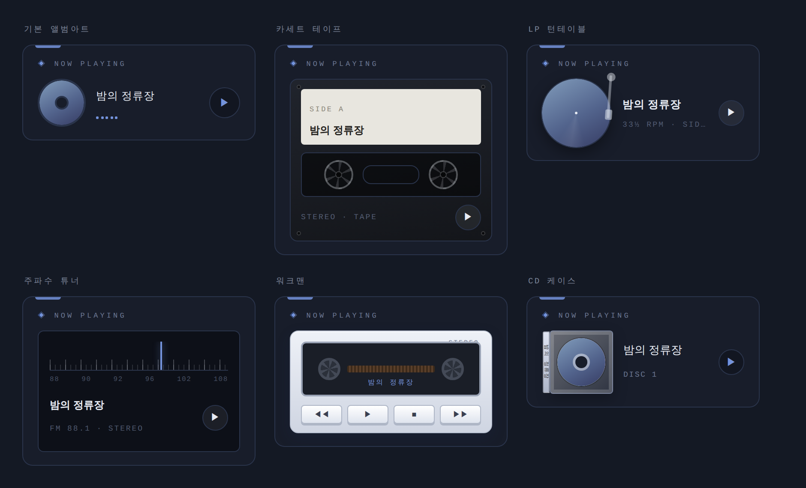

러브로그 · 위젯
BGM
BGM 위젯에 유튜브 링크(영상 또는 재생목록)를 넣고 ▶를 누르면 왼쪽 아래 미니 플레이어에서 재생됩니다.
- 게시판을 옮겨 다녀도 음악이 안 끊기고, 플레이어의 ✕로 끕니다. 다른 사람 홈으로 가면 자동으로 꺼집니다.
- 플레이리스트 — ✎의 [+ 곡 추가]로 여러 곡. 대표곡부터 이어 재생, 곡 목록에서 눌러 바로 넘어가기. 곡마다 한 줄 메모.
- 스킨 — 기본 앨범아트·카세트 테이프·LP 턴테이블·주파수 튜너·워크맨·CD 케이스. 재생하면 릴이 감기고, 판이 돌고, 바늘이 떨립니다. 밝은 홈에선 밝은 몸체가 기본.
- ⏱ 재생바(막대를 누르면 그 지점으로) · ⇄↻ 셔플 · 한 곡 반복 · ▬ 미니 모드(띠 하나로 접힘).
- 커버 이미지 — [🖼 커버 이미지]는 위젯 공통, 곡 줄 끝 🖼은 곡별(곡별이 우선). LP는 판 한가운데 라벨이라 직접 그린 그림을 올리면 진짜 레코드 같습니다.

사진 자리img/ll-w-bgm.png